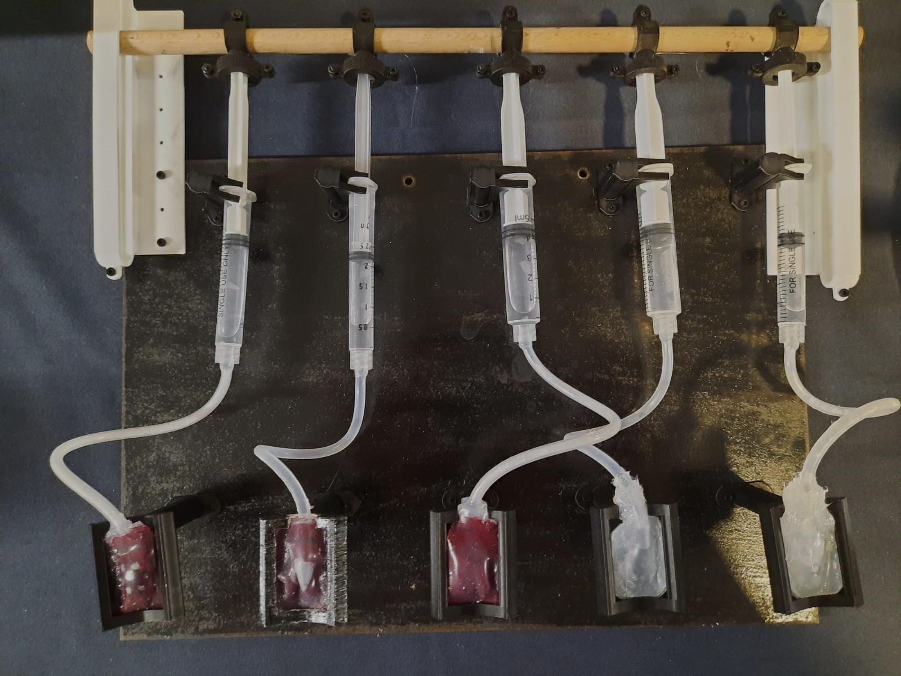
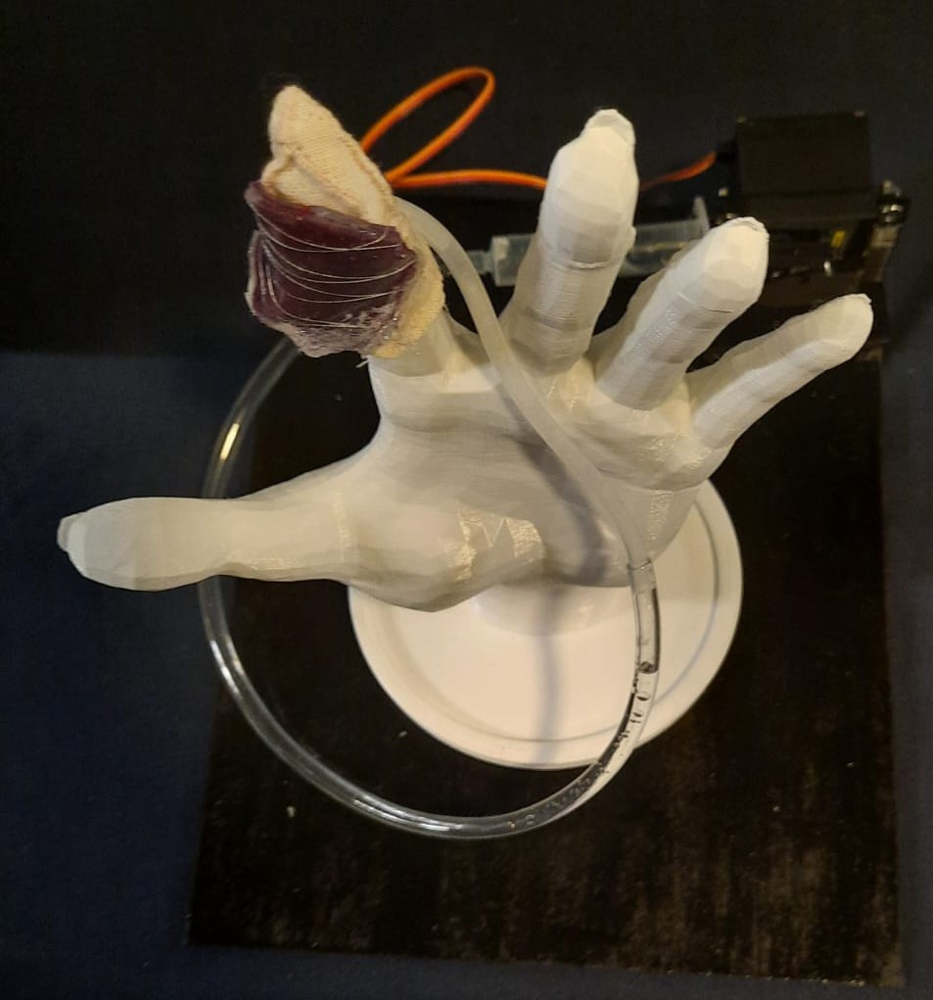
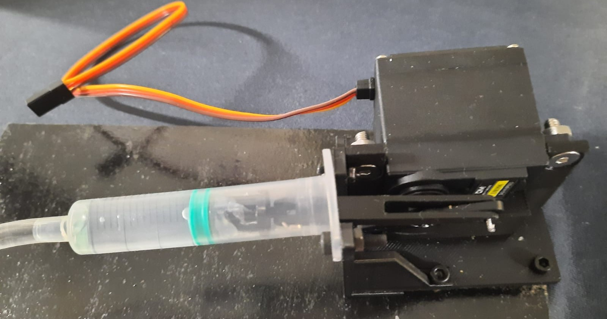
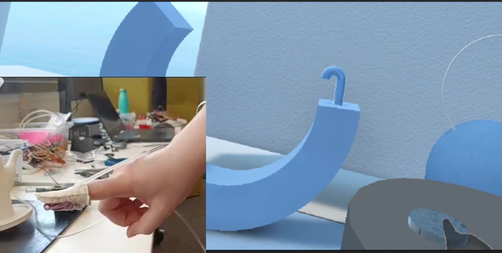

Maëlle ROCHE
Présentation du parcours et des expériences
Voir le Portfolio
Voir le CV
Présentation du parcours et des expériences
Voir le Portfolio
Voir le CV
prototypage et conception, Modélisation 3D, design, électronique et capteurs, Python, Linux, C, Communication, Interface Homme-Machine
Structure de données, C++, Conception et programmation de sites web, Sécurité des réseaux et du web, outils de programmation pour la science de données, probabilités numériques
Base de données, Datascience et IA, traitement du signal, Algèbre linéaire et analyse numérique, analyse vectorielle, calcul intégral et différentiel, probabilités et statistiques. Conception assistée par ordinateur.
Ingénieur de recherche au Sensorimotor Interaction Group, Max-Planck Institute à Saarbrücken, en Allemagne. J'ai conçu et construit différents prototypes pour des expérimentations en haptique et robotique.
Stage dans la start-up COLORI en gestion des stocks, aide à la création du site e-commerce et aide à la conception d’activités pédagogiques.
Contrat d’intérimaire d’un mois comme agent d’accueil à la Société Générale.
Les dessous de verre modulaire en cuire
Mozaïk est un projet de dessous de verre en cuir. J’ai pris en charge le design de la marque (logo et charte graphique) ainsi que le design de l’objet, notamment la conception du motif intérieur. J’ai aussi participé aux étapes de prototypages. Les Mozaïk ont la capacité à s’assembler à l’infini pour paver le plan.
Competences : SolidWorks, Découpeuse laser, Illustrator


Les Game Boy capablent de jouer en réseaux
Pour ce projet, en équipe de trois nous avons réalisé deux game boy pouvant jouer à Pong en réseaux. J’ai pris en charge la partie design, modélisation et impression du boîtier. Il est composé de deux parties assemblées par des vis, de deux poignées assemblées par des glissières et de huit boutons. L’intérieur du boitier permet le maintien des cartes électroniques.
Competences : SolidWorks, Design de PCB, Impression 3D
Le Gant à retour tactile pour la réalité virtuelle
Ce projet tourne autour de la conception et de la réalisation d’un gant pour permettre le retour tactile et thermique en réalité virtuelle. Il utilise différentes techniques de fabrication comme l’impression 3D et le moulage en silicone. Il consiste en la fabrication de bulles de silicones fixée à l’extrémité du doigt capable de se gonfler et de se dégonfler selon les contacts avec l’environnement virtuel. Elles sont activées par des servomoteurs. Au cours de ce projet j'ai également testé différentes formes de bulles afin de choisir la plus adaptée.
Competences : SolidWorks, Impression 3D, Moulage silicone, Arduino, Unity
   